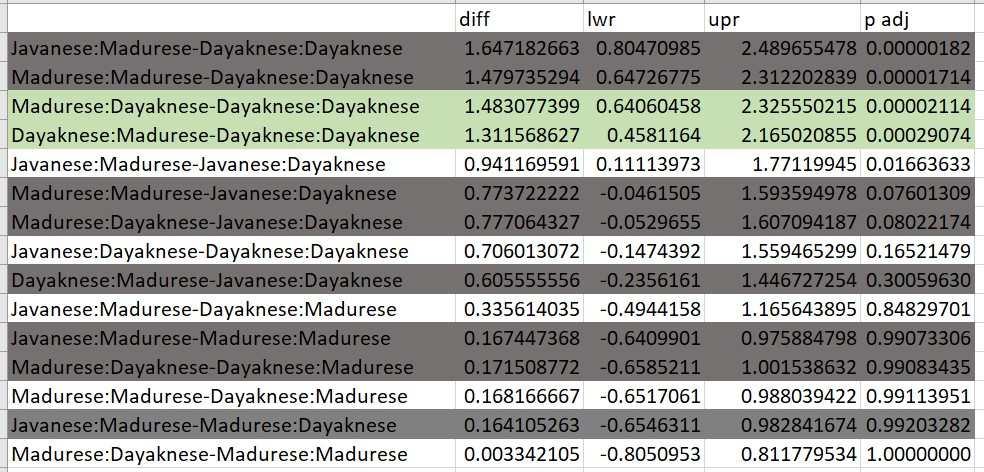

Chapter 13 Examples for Follow-up to Factorial ANOVA
As noted in the lesson on factorial ANOVA, the options for follow-up to a significant interaction effect are infinite. In order to maintain a streamlined chapter with minimal distractions to student learning (through numerous examples and changes in R packages), I have moved examples of some these variations to this section.
As a quick reminder, I will describe and re-simulate the data. The narration will presume familiarity with the factorial ANOVA lesson.
Research Vignette
The research vignette for this example was located in Kalimantan, Indonesia and focused on bias in young people from three ethnic groups. The Madurese and Dayaknese groups were engaged in ethnic conflict that spanned 1996 to 2001. The last incidence of mass violence was in 2001 where approximately 500 people (mostly from the Madurese ethnic group) were expelled from the province. Ramdhani et al.’s (2018) research hypotheses were based on the roles of the three ethnic groups in the study. The Madurese appear to be viewed as the transgressors when they occupied lands and took employment and business opportunities from the Dayaknese. Ramdhani et al. also included a third group who were not involved in the conflict (Javanese). The research participants were students studying in Yogyakara who were not involved in the conflict. They included 39 Madurese, 35 Dyaknese, and 37 Javanese; 83 were male and 28 were female.
In the study (Ramdhani et al., 2018), participants viewed facial pictures of three men and three women (in traditional dress) from each ethnic group (6 photos per ethnic group). Participant were asked, “How do you feel when you see this photo? Please indicate your answers based on your actual feelings.” Participants responded on a 7-point Likert scale ranging from 1 (strongly disagree) to 7 (strongly agree). Higher scores indicated ratings of higher intensity on that scale. The two scales included the following words:
- Positive: friendly, kind, helpful, happy
- Negative: disgusting, suspicious, hateful, angry
Quick Resimulating of the Data
Below is script to simulate data for the negative reactions variable from the information available from the manuscript (Ramdhani et al., 2018). If you would like more information about the details of this simulation, please visit the lesson on factorial ANOVA.
library(tidyverse)
set.seed(210731)
# sample size, M and SD for each cell; this will put it in a long
# file
Negative <- round(c(rnorm(17, mean = 1.91, sd = 0.73), rnorm(18, mean = 3.16,
sd = 0.19), rnorm(19, mean = 3.3, sd = 1.05), rnorm(20, mean = 3, sd = 1.07),
rnorm(18, mean = 2.64, sd = 0.95), rnorm(19, mean = 2.99, sd = 0.8)),
3)
# sample size, M and SD for each cell; this will put it in a long
# file
Positive <- round(c(rnorm(17, mean = 4.99, sd = 1.38), rnorm(18, mean = 3.83,
sd = 1.13), rnorm(19, mean = 4.2, sd = 0.82), rnorm(20, mean = 4.19,
sd = 0.91), rnorm(18, mean = 4.17, sd = 0.6), rnorm(19, mean = 3.26,
sd = 0.94)), 3)
ID <- factor(seq(1, 111))
Rater <- c(rep("Dayaknese", 35), rep("Madurese", 39), rep("Javanese", 37))
Photo <- c(rep("Dayaknese", 17), rep("Madurese", 18), rep("Dayaknese",
19), rep("Madurese", 20), rep("Dayaknese", 18), rep("Madurese", 19))
# groups the 3 variables into a single df: ID#, DV, condition
Ramdhani_df <- data.frame(ID, Negative, Positive, Rater, Photo)
Ramdhani_df[, "Rater"] <- as.factor(Ramdhani_df[, "Rater"])
Ramdhani_df[, "Photo"] <- as.factor(Ramdhani_df[, "Photo"])If you want to export this data as a file to your computer, remove the hashtags to save it (and re-import it) as a .csv (“Excel lite”) or .rds (R object) file. This is not a necessary step.
The code for .csv will likely lose the formatting (i.e., making the Rater and Photo variables factors), but it is easy to view in Excel.
# write the simulated data as a .csv write.table(Ramdhani_df,
# file='RamdhaniCSV.csv', sep=',', col.names=TRUE, row.names=FALSE)
# bring back the simulated dat from a .csv file Ramdhani_df <-
# read.csv ('RamdhaniCSV.csv', header = TRUE) str(Ramdhani_df)The code for the .rds file will retain the formatting of the variables, but is not easy to view outside of R.
Analysis of Simple Main Effects with Orthogonal Contrasts
This example follows a significant interaction effect. Specifically, we will analyze the effects of ethnicity of rater (three levels) within photo stimulus (two levels). We will conduct two one-way ANOVAs for the Dayaknese and Madurese photos, separately. In this example, we will utilize orthogonal contrast-coding for rater ethnicity.
In the lesson on factorial ANOVA I used the rstatix package. I am not aware of a way to do this type of analysis in rstatix, therefore this worked example will use functions from base R and ______.
This is our place on the ANOVA workflow.

Among the requirements for orthogonal contrasts are these critical ones:
- there be one fewer contrast than the number of groups, (i.e., k -1), and
- once a group is singled out, it cannot be compared again.
Thus, with a limit of two contrasts I want to compare the
- Javanese to the Dayaknese and Madurese combined (asking, “Do the Javanese evaluations of the photo differ from the combined Dyaknese/Madurese evaluations?”), then
- Dayaknese to Madurese (asking, “Do the Dayknese and Madurese evaluations of the photos differ from each other?”)
Such contrasts should be theoretically or rationally defensible. In the case of none, low, and hihigh dose/intervention/exposure designs this is an easy requirement to meet. Typically, the no-dose is compared to the combined low and high dosage conditions. Then the low and high dosage conditions are compared. I would argue that because the Javanese were observers to the conflict, we can single them out in the first contrast, then compare the two groups who were directly involved in the conflict.
It helps to know what the default contrast codes are; we can get that information with the contrasts() function.
Javanese Madurese
Dayaknese 0 0
Javanese 1 0
Madurese 0 1Next, we set up the contrast conditions. In the code below,
- c1 indicates that the Javanese (noted as -2) are compared to the Dayaknese (1) and Madurese (1)
- c2 indicates that the Dayaknese (-1) and Madurese (1) are compared; Javanese (0) is removed from the contrast.
# tell R which groups to compare
c1 <- c(1, -2, 1)
c2 <- c(-1, 0, 1)
mat <- cbind(c1, c2) #combine the above bits
contrasts(Ramdhani_df$Rater) <- mat # attach the contrasts to the variableThis allows us to recheck the contrasts.
c1 c2
Dayaknese 1 -1
Javanese -2 0
Madurese 1 1With this output we can confirm that, in contrast 1 (the first column) we are comparing the Javanese to the combined Dayaknese and Madurese. In contrast 2 (the second column) we are comparing the Dayaknese to the Madurese.
We will conduct these contrasts with one group at a time. First, we must create a subset of all observations of the Dayaknese photo:
Next we use the aov() function from base R for the one-way ANOVA. Like magic, the contrast that we specified is assigned to the Rater variable. We can apply the summary() function to the aov() object that we created to see the results.
Df Sum Sq Mean Sq F value Pr(>F)
Rater 2 19.81 9.903 13.32 0.0000221 ***
Residuals 51 37.90 0.743
---
Signif. codes: 0 '***' 0.001 '**' 0.01 '*' 0.05 '.' 0.1 ' ' 1We can apply the etaSquared() function from the lsr package to retrieve an \(\eta^2\).
# effect size for simple main effect can add 'type = 1,2,3,4' to
# correspond with the ANOVA that was run
lsr::etaSquared(Dykn_simple, anova = FALSE) eta.sq eta.sq.part
Rater 0.3432006 0.3432006We can capture the F string from this output: F [2, 51]) = 13.32, p < .001, \(\eta ^{2}\) = 0.343.
This code produces the contrasts we specified. Note that in our code we can improve the interpretability of the output by adding labels. We know the specific contrasts from our prior work.
summary.aov(Dykn_simple, split = list(Rater = list(`Javanese v Dayaknese and Madurese` = 1,
`Dayaknese Madurese` = 2))) Df Sum Sq Mean Sq F value Pr(>F)
Rater 2 19.81 9.903 13.325 0.00002211
Rater: Javanese v Dayaknese and Madurese 1 0.07 0.071 0.095 0.759
Rater: Dayaknese Madurese 1 19.73 19.735 26.554 0.00000419
Residuals 51 37.90 0.743
Rater ***
Rater: Javanese v Dayaknese and Madurese
Rater: Dayaknese Madurese ***
Residuals
---
Signif. codes: 0 '***' 0.001 '**' 0.01 '*' 0.05 '.' 0.1 ' ' 1An APA style reporting of results-so-far might look like this
The simple main effect evaluating differences between rater ethnicity when evaluating photos of Dayaknese ethnic group was statistically significant: \(F(2, 5)1 = 13.32, p < .001, \eta ^{2} = 0.343\). Follow-up testing indicated non-significant differences when the ratings from members of the Javanese ethnic group were compared to the Dayaknese and Madurese, combined \((F [1, 51] = 0.095, p = .759)\). There was a statistically significant difference when Dayaknese and Madurese raters were compared \((F [1, 51] =26.554, p < .001)\).
We repeat the simple main effect process for evaluation of the Madurese photos.
# subset data
Madurese_Ph <- subset(Ramdhani_df, Photo == "Madurese")
# change df to subset, new model name
Mdrs_simple <- aov(Negative ~ Rater, data = Madurese_Ph)
# output for simple main effect
summary(Mdrs_simple) Df Sum Sq Mean Sq F value Pr(>F)
Rater 2 1.04 0.5207 0.679 0.512
Residuals 54 41.44 0.7674 # effect size for simple main effect can add 'type = 1,2,3,4' to
# correspond with the ANOVA that was run
lsr::etaSquared(Mdrs_simple, anova = FALSE) eta.sq eta.sq.part
Rater 0.02451385 0.02451385Let’s capture the F string for ratings of the Madurese photos: \(F(2, 54) = 0.679, p = .512, \eta ^{2} = 0.024\).
We can use the procedure described above to obtain our orthogonal contrasts.
summary.aov(Mdrs_simple, split = list(Rater = list(`Javanese v Dayaknese and Madurese` = 1,
`Dayaknese Madurese` = 2))) Df Sum Sq Mean Sq F value Pr(>F)
Rater 2 1.04 0.5207 0.679 0.512
Rater: Javanese v Dayaknese and Madurese 1 0.77 0.7734 1.008 0.320
Rater: Dayaknese Madurese 1 0.27 0.2679 0.349 0.557
Residuals 54 41.44 0.7674 Here’s a write-up of this portion of the result.
The simple main effect evaluating differences between rater ethnicity when evaluating photos of Madurese ethnic group was not statistically significant: \(F(2, 54) = 0.679, p = .512, \eta ^{2} = 0.024\). Correspondingly, follow-up testing indicated non-significant differences when the ratings of the Javanese were compared to Dayaknese and Madurese, combined \((F[1, 54] = 1.008, p = .320)\) and when the ratings of the Dayaknese and Madurese were compared \((F[1, 54] = 0.349, p = .557)\)
In this series of analyses we did not have an opportunity to “let R manage Type I error for us.” Therefore, we will need to do it manually. We had 4 follow-up contrasts (2 for Dayaknese, 2 for Madurese). Using a traditional Bonferroni we could control Type I error with .05/4 = .0125
[1] 0.0125APA Write-up of the simple main effect of photo stimulus within rater ethnicity.
This would be added to the write-up of the omnibus two-way ANOVA test.
To explore the interaction effect, we followed with tests of simple effect of rater ethnicity within the photo stimulus. That is, we examined the effect of each each rater’s ethnicity within the Madurese and Dayaknese photo stimulus, separately. Our first analysis evaluated the effect of the rater’s ethnicity when evaluating the Dayaknese photo; our second analysis evaluated effect of the rater’s ethnicity when evaluating the Madurese photo. To control for Type I error across the two simple main effects, we set alpha at .0125 (.05/4). The simple main effect evaluating differences between rater ethnicity when evaluating photos of Dayaknese ethnic group was statistically significant: \(F(2, 51) = 13.32, p < .001, \eta ^{2} = 0.343\). Follow-up testing indicated non-significant differences when the ratings from members of the Javanese ethnic group were compared to the Dayaknese and Madurese, combined \((F [1, 51] = 0.095, p = .759)\). There was a statistically significant difference when Dayaknese and Madurese raters were compared \((F [1, 51] =26.554, p < .001)\). The simple main effect evaluating differences between rater ethnicity when evaluating photos of Madurese ethnic group was not statistically significant: \(F(2, 54) = 0.679, p = .512, \eta ^{2} = 0.024\). Correspondingly, follow-up testing indicated non-significant differences when the ratings of the Javanese were compared to Dayaknese and Madurese, combined \((F[1, 54] = 1.008, p = .320)\) and when the ratings of the Dayaknese and Madurese were compared \((F[1, 54] = 0.349, p = .557)\). This moderating effect of ethnicity of the rater on the negative reaction to the photo stimulus is illustrated in Figure 1.
I am not aware of an integration of packages that would represent this type of orthogonal contrast in a figure. Therefore, I would simply present the boxplots clustered by photo stimulus.
ggpubr::ggboxplot(Ramdhani_df, x = "Photo", y = "Negative", color = "Rater",
xlab = "Rater Ethnicity Represented within Photo Stimulus", ylab = "Negative Reaction",
add = "jitter", title = "Figure 1. Simple Main Effect of Rater within Photo Stimulus",
ylim = c(1, 7))
Analysis of Simple Main Effects with a Polynomial Trend
In the context of the significant interaction effect, we might be interested in polynomial trends for any simple main effects where three or more cells are compared.
Why? If there are only two cells being compared, then the significance of that has already been tested and if significant, it is also a significant linear effect (because the shape between any two points is a line).
Here is where we are in the workflow:
At the outset, let me acknowledge that this is not the best example to demonstrate a polynomial trend. Why? We do not necessarily have an ordered prediction across categories for this vignette. Other research scenarios (e.g., when dosage, intervention, or exposure is none, low, high) are more readily suited for this analytic strategy.
In our example, Rater has three groups. Thus, we could evaluate a polynomial for the simple main effect of ethnicity of the rater within photo stimulus. That is, we conduct polynomial analyses separately for the Dayaknese and Madurese photo stimuli.
If you haven’t already, we need to subset the data, creating separate datasets for the evaluations of the Dayaknese photos and Madurese photos:
Dayaknese_Ph <- subset(Ramdhani_df, Photo == "Dayaknese")
Madurese_Ph <- subset(Ramdhani_df, Photo == "Madurese")We will work the entire contrast for each of the datasets, separately.
First, we assign the polynomial contrast to the Rater variable. This is easily accomplished because the contr.poly(#) argument is built into base R. We simply indicate the number of levels in the variable. With Javanese, Dayaknese, and Madurese ethnic groups, we have three.
Second, we calculate the one-way ANOVA. Because we are using the aov() function in base R, we will need to extract the results. This time we need to use the summary.lm() function.
contrasts(Dayaknese_Ph$Rater) <- contr.poly(3)
poly_Dy <- aov(Negative ~ Rater, data = Dayaknese_Ph)
summary.lm(poly_Dy)
Call:
aov(formula = Negative ~ Rater, data = Dayaknese_Ph)
Residuals:
Min 1Q Median 3Q Max
-1.8948 -0.5463 -0.1098 0.5155 2.1402
Coefficients:
Estimate Std. Error t value Pr(>|t|)
(Intercept) 2.54746 0.11744 21.693 < 0.0000000000000002 ***
Rater.L 1.04869 0.20351 5.153 0.00000419 ***
Rater.Q 0.02901 0.20330 0.143 0.887
---
Signif. codes: 0 '***' 0.001 '**' 0.01 '*' 0.05 '.' 0.1 ' ' 1
Residual standard error: 0.8621 on 51 degrees of freedom
Multiple R-squared: 0.3432, Adjusted R-squared: 0.3174
F-statistic: 13.32 on 2 and 51 DF, p-value: 0.00002211We are interested in the regression output that end in the extensions “.L” (for linear trend) and “.Q” (for quadratic trend). In the event that more than one polynomial trend is significant, select the higher one. For example, if both linear and quadratic are selected, interpret the quadratic trend
Results of polynomial trend analysis indicated a statistically significant linear trend for evaluation of the Dayaknese photos across the three raters \(t(51) = 5.153, p < .001\).
Let’s repeat the process for the Madurese photos.
contrasts(Madurese_Ph$Rater) <- contr.poly(3)
poly_Md <- aov(Negative ~ Rater, data = Madurese_Ph)
summary.lm(poly_Md)
Call:
aov(formula = Negative ~ Rater, data = Madurese_Ph)
Residuals:
Min 1Q Median 3Q Max
-2.08650 -0.54395 0.01367 0.35905 2.34350
Coefficients:
Estimate Std. Error t value Pr(>|t|)
(Intercept) 3.2973 0.1161 28.391 <0.0000000000000002 ***
Rater.L 0.1189 0.2012 0.591 0.557
Rater.Q -0.2054 0.2011 -1.021 0.312
---
Signif. codes: 0 '***' 0.001 '**' 0.01 '*' 0.05 '.' 0.1 ' ' 1
Residual standard error: 0.876 on 54 degrees of freedom
Multiple R-squared: 0.02451, Adjusted R-squared: -0.01162
F-statistic: 0.6785 on 2 and 54 DF, p-value: 0.5116Results of a polynomial trend analyses were non-significant when ethnicity of the rater was evaluated when rating Madurese photos. Compared to the significant linear trend for the Dayaknese photos, results for ratings of the Madurese photos were non-significant (\(t[54] = 0.591, p = 0.557\)).
Here’s how I might write up the results. In the case of polynomials, I will sometimes add them to an analysis that uses post hoc comparisons, particularly if the polynomial is helpful in conveying meaningful information about the result.
We followed up a significant interaction effect with a simple main effect of rater ethnicity within photo stimulus. Specifically, we were curious to see if there was a polynomial trend across rater ethnicity (ordered as Dayaknese, Javanese, and Madurese). Results indicated a statistically significant linear trend for evaluation of the Dayaknese photos \(t(51) = 5.153, p < .001\), but not for the Madurese photos (\(t[54] = 0.591, p = 0.557\)).
The figure we have been using would be appropriate to illustrate the significant linear trend.
ggpubr::ggboxplot(Ramdhani_df, x = "Photo", y = "Negative", color = "Rater",
xlab = "Rater Ethnicity Represented within Photo Stimulus", ylab = "Negative Reaction",
add = "jitter", title = "Figure 1. Simple Main Effect of Rater within Photo Stimulus",
ylim = c(1, 7))
All Possible Post Hoc Comparisons
Another option is the comparison possible cells. These are termed post hoc comparisons. They are an alternative to simple main effects; you would not report both. A potential criticism of this approach is that it is atheoretical. Without compelling justification, reviewers may criticize this approach as “fishing,” “p-hacking,” or “HARKing” (hypothesizing after results are known). None-the-less, particularly when our results are not as expected, I do think having these tools available can be a helpful resource.
The figure shows our place on the Two-Way ANOVA Workflow.
As the numbers of levels increase, post hoc comparisons become somewhat unwieldy. Even though this procedure produces them all, you can select which sensible number you want to compare and control for Type I error according to the number in that set.
With rater ethnicity (3 levels) and photo stimulus (2 levels), we have 6 groupings. When k is the number of groups, the total number of paired comparisons is: k(k-1)*2
[1] 15Before running this analysis, we must calculate the omnibus ANOVA with the aov() function in base R and save the result as an object.
Df Sum Sq Mean Sq F value Pr(>F)
Rater 2 12.21 6.103 8.077 0.000546 ***
Photo 1 14.62 14.619 19.346 0.0000262 ***
Rater:Photo 2 8.61 4.304 5.696 0.004480 **
Residuals 105 79.34 0.756
---
Signif. codes: 0 '***' 0.001 '**' 0.01 '*' 0.05 '.' 0.1 ' ' 1We can calculate the 15 post-hoc paired comparisons with the TukeyHSD() function from base R.
Tukey multiple comparisons of means
95% family-wise confidence level
factor levels have been ordered
Fit: aov(formula = Negative ~ Rater * Photo, data = Ramdhani_df)
$Rater
diff lwr upr p adj
Javanese-Dayaknese 0.5147954 0.02750358 1.0020872 0.0358235
Madurese-Dayaknese 0.8068425 0.32566283 1.2880222 0.0003629
Madurese-Javanese 0.2920471 -0.18222911 0.7663234 0.3124227
$Photo
diff lwr upr p adj
Madurese-Dayaknese 0.726071 0.3987575 1.053385 0.0000262
$`Rater:Photo`
diff lwr upr
Javanese:Dayaknese-Dayaknese:Dayaknese 0.706013072 -0.14743916 1.5594653
Dayaknese:Madurese-Dayaknese:Dayaknese 1.311568627 0.45811640 2.1650209
Madurese:Madurese-Dayaknese:Dayaknese 1.479735294 0.64726775 2.3122028
Madurese:Dayaknese-Dayaknese:Dayaknese 1.483077399 0.64060458 2.3255502
Javanese:Madurese-Dayaknese:Dayaknese 1.647182663 0.80470985 2.4896555
Dayaknese:Madurese-Javanese:Dayaknese 0.605555556 -0.23561614 1.4467273
Madurese:Madurese-Javanese:Dayaknese 0.773722222 -0.04615053 1.5935950
Madurese:Dayaknese-Javanese:Dayaknese 0.777064327 -0.05296553 1.6070942
Javanese:Madurese-Javanese:Dayaknese 0.941169591 0.11113973 1.7711995
Madurese:Madurese-Dayaknese:Madurese 0.168166667 -0.65170609 0.9880394
Madurese:Dayaknese-Dayaknese:Madurese 0.171508772 -0.65852109 1.0015386
Javanese:Madurese-Dayaknese:Madurese 0.335614035 -0.49441582 1.1656439
Madurese:Dayaknese-Madurese:Madurese 0.003342105 -0.80509532 0.8117795
Javanese:Madurese-Madurese:Madurese 0.167447368 -0.64099006 0.9758848
Javanese:Madurese-Madurese:Dayaknese 0.164105263 -0.65463115 0.9828417
p adj
Javanese:Dayaknese-Dayaknese:Dayaknese 0.1652148
Dayaknese:Madurese-Dayaknese:Dayaknese 0.0002907
Madurese:Madurese-Dayaknese:Dayaknese 0.0000171
Madurese:Dayaknese-Dayaknese:Dayaknese 0.0000211
Javanese:Madurese-Dayaknese:Dayaknese 0.0000018
Dayaknese:Madurese-Javanese:Dayaknese 0.3005963
Madurese:Madurese-Javanese:Dayaknese 0.0760131
Madurese:Dayaknese-Javanese:Dayaknese 0.0802217
Javanese:Madurese-Javanese:Dayaknese 0.0166363
Madurese:Madurese-Dayaknese:Madurese 0.9911395
Madurese:Dayaknese-Dayaknese:Madurese 0.9908344
Javanese:Madurese-Dayaknese:Madurese 0.8482970
Madurese:Dayaknese-Madurese:Madurese 1.0000000
Javanese:Madurese-Madurese:Madurese 0.9907331
Javanese:Madurese-Madurese:Dayaknese 0.9920328If we want to consider all 15 pairwise comparisons and also control for Type I error, a Holm’s sequential Bonferroni (Green & Salkind, 2017c) will help us take a middle-of-the-road approach (not as strict as .05/15 with the traditional Bonferroni; not as lenient as “none”) to managing Type I error.
With the Holms, we rank order the p values associated with the 15 comparisons in order from lowest (e.g., .0000018) to highest (e.g., 1.000). The first p value is evaluated with the most strict criterion (.05/15; the traditional Bonferonni approach). Then, each successive comparison calculates the p value by using the number of remaining comparisons as the denominator (e.g., .05/14, .05/13, .05/12). As the p values rise and the alpha levels relax, there will be a cut-point where remaining comparisons are not statistically significant.
[1] 0.003333333[1] 0.003571429To facilitate this contrast, let’s extract the 15 TukeyHSD tests and work with them in Excel.
First, obtain the structure of the posthoc object
List of 3
$ Rater : num [1:3, 1:4] 0.5148 0.8068 0.292 0.0275 0.3257 ...
..- attr(*, "dimnames")=List of 2
.. ..$ : chr [1:3] "Javanese-Dayaknese" "Madurese-Dayaknese" "Madurese-Javanese"
.. ..$ : chr [1:4] "diff" "lwr" "upr" "p adj"
$ Photo : num [1, 1:4] 0.726071 0.3987575 1.0533845 0.0000262
..- attr(*, "dimnames")=List of 2
.. ..$ : chr "Madurese-Dayaknese"
.. ..$ : chr [1:4] "diff" "lwr" "upr" "p adj"
$ Rater:Photo: num [1:15, 1:4] 0.706 1.312 1.48 1.483 1.647 ...
..- attr(*, "dimnames")=List of 2
.. ..$ : chr [1:15] "Javanese:Dayaknese-Dayaknese:Dayaknese" "Dayaknese:Madurese-Dayaknese:Dayaknese" "Madurese:Madurese-Dayaknese:Dayaknese" "Madurese:Dayaknese-Dayaknese:Dayaknese" ...
.. ..$ : chr [1:4] "diff" "lwr" "upr" "p adj"
- attr(*, "class")= chr [1:2] "TukeyHSD" "multicomp"
- attr(*, "orig.call")= language aov(formula = Negative ~ Rater * Photo, data = Ramdhani_df)
- attr(*, "conf.level")= num 0.95
- attr(*, "ordered")= logi TRUEIn Excel, I would sort my results by their p values (low to high) and consider my threshold (p < .0033) to determine which effects were statistically significant. Using the strictest criteria of p < .0033, we would have four statistically significant values.

I would ask, “Is this what we want?” Similar to the simple main effects we just tested, I am interested in two sets of comparisons:
First, how are the two sets of photos (Madurese and Dayaknese) rated within each set of raters.
- Javanese:Madurese - Javanese:Dayaknese
- Dayaknese:Madurese - Dayaknese:Dayaknese
- Madurese:Madurese - Madurese:Dayaknese
Second, focused on each photo, what are the relative ratings.
- Javanese:Madurese - Dayaknese:Madurese
- Madurese: Madurese - Dayaknese:Madurese
- Javanese:Dayaknese - Dayaknese:Dayaknese
- Madurese: Dayaknese - Dayaknese:Dayaknese
This is only seven sets of comparisons and would considerably reduce the alpha:
[1] 0.007142857Below I have greyed-out the comparisons that are less interesting to me and left the seven that are my focal interest. I have highlighted in green the two comparisons that are statistically significant based on the Holms’ sequential criteria. In this case, it does not make any difference in our interpretation of these focal predictors.
 Given that my “tinkering around” analysis resembles the results of the simple main effects analyses in the factorial lessonn, I will not write this up as an APA style results section, but rather offer this is as a set of tools when you would like to explore the data in an atheoretical manner.